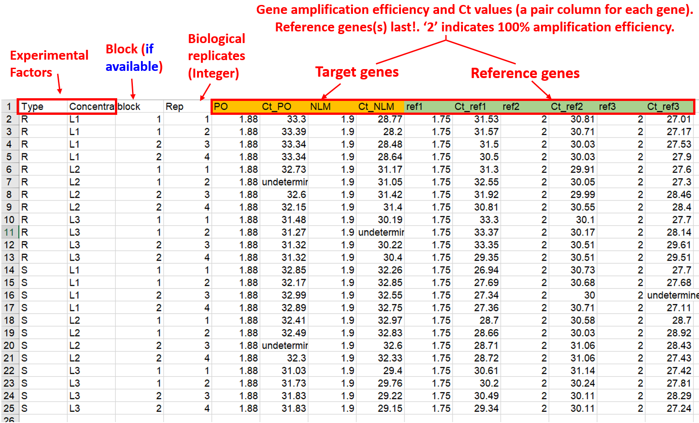

Tools for multi-target multi-reference analysis of qPCR data using ΔCt and ΔΔCt methods, including t-tests, ANOVA, ANCOVA, repeated-measures models, and publication-ready visualizations. The package implements a general calculation method described by Ganger et al. (2017) and Taylor et al. (2019) for covering both the Livak and Pfaffl methods.
Functions
The rtpcr package takes a table of efficiency (E) the Ct values of genes and performs different analyses using the following functions.
| Function | Description |
|---|---|
ANOVA_DCt |
ΔCt ANOVA analysis |
ANOVA_DDCt |
ΔΔCt ANOVA analysis |
REPEATED_DDCt |
ΔΔCt ANOVA analysis for repeated-measures data |
TTEST_DDCt |
ΔΔCt method t-test analysis |
plotFactor |
Bar plot of gene expression for one-, two- or three-factor experiments |
Means_DDCt |
Pairwise comparison of RE values for any user-specified effect |
efficiency |
Amplification efficiency statistics and standard curves |
meanTech |
Calculate mean of technical replicates |
multiplot |
Combine multiple ggplot objects into a single layout |
Quick start
Installing and loading
The rtpcr package can be installed by running the following code in R:
From CRAN:
# Installing from CRAN
install.packages("rtpcr")
# Loading the package
library(rtpcr)Or from from GitHub (developing version):
devtools::install_github("mirzaghaderi/rtpcr", build_vignettes = FALSE)Input data structure
Input data structure is important and should be in wide format. For relative expression analysis (using TTEST_DDCt, ANOVA_DCt, ANOVA_DDCt and REPEATED_DDCt functions), the required column structure of the input data is:
- Experimental condition columns (up to 3 factors, and one block if available)
- Replicates information (biological replicates or subjects; see NOTE 1)
- Target genes efficiency and Ct values (a pair column for each gene)
- Reference genes efficiency and Ct values (a pair column for each gene)
The package supports one or more target or reference gene(s), supplied as efficiency–Ct column pairs. Reference gene columns must always appear last. A sample input data is presented below.

NOTE 1
For TTEST_DDCt, ANOVA_DCt, and ANOVA_DDCt, each row is from a separate and uniq biological replicate. For example, a dataframe with 12 rows has come from an experiment with 12 individuals. The REPEATED_DDCt function is intended for experiments with repeated observations (e.g. time-course data). For REPEATED_DDCt, the Replicate column contains identifiers for each individual (id or subject). For example, all rows with a 1 at Rep column correspond to a single individual, all rows with a 2 correspond to another individual, and so on, which have been sampled at specific time points.
Handling missing Ct values
The rtpcr package does not automatically handle missing Ct values. However, NA can be used to represent missing Ct measurements in the input data. In such cases, NA is returned for the corresponding individual ΔCt and passed along to downstream statistical analyses. If more sophisticated handling of missing Ct values (fixed value of 40 for target genes, mean Ct alues of other replicates, or imputation) is desired, qPCR imputation tools can be used in advance of analysis with rtpcr.
Data analysis
Amplification efficiency
The efficiency function calculates the amplification efficiency (E), slope, and R² statistics for genes, and performs pairwise comparisons of slopes. It takes a data frame in which the first column contains the dilution ratios, followed by the Ct value columns for each gene.
# Applying the efficiency function
data <- read.csv(system.file("extdata", "data_efficiency.csv", package = "rtpcr"))
data
# dilutions Gene1 Gene2 Gene3
# 1.00 25.58 24.25 22.61
# 1.00 25.54 24.13 22.68
# 1.00 25.50 24.04 22.63
# 0.50 26.71 25.56 23.67
# 0.50 26.73 25.43 23.65
# 0.50 26.87 26.01 23.70
# 0.20 28.17 27.37 25.11
# 0.20 28.07 26.94 25.12
# 0.20 28.11 27.14 25.11
# 0.10 29.20 28.05 26.17
# 0.10 29.49 28.89 26.15
# 0.10 29.07 28.32 26.15
# 0.05 30.17 29.50 27.12
# 0.05 30.14 29.93 27.14
# 0.05 30.12 29.71 27.16
# 0.02 31.35 30.69 28.52
# 0.02 31.35 30.54 28.57
# 0.02 31.35 30.04 28.53
# 0.01 32.55 31.12 29.49
# 0.01 32.45 31.29 29.48
# 0.01 32.28 31.15 29.26
# Analysis
efficiency(data)
# $Efficiency
# Gene Slope R2 E
# 1 Gene1 -3.388094 0.9965504 1.973110
# 2 Gene2 -3.528125 0.9713914 1.920599
# 3 Gene3 -3.414551 0.9990278 1.962747
#
# $Slope_compare
# $contrasts
# contrast estimate SE df t.ratio p.value
# C2H2.26 - C2H2.01 0.1400 0.121 57 1.157 0.4837
# C2H2.26 - GAPDH 0.0265 0.121 57 0.219 0.9740
# C2H2.01 - GAPDH -0.1136 0.121 57 -0.938 0.6186Relative expression
TTEST_DDCt, ANOVA_DDCt, REPEATED_DDCt, and ANOVA_DCt functions perform relative expression analysis using ΔΔCt or ΔCt methods. Below is an example of expression analysis using ΔΔCt method.
# An example of a properly arranged dataset from a repeated-measures experiment.
data <- read.csv(system.file("extdata", "data_repeated_measure_1.csv", package = "rtpcr"))
data
# time id E_Target Ct_target E_Ref Ct_Ref
# 1 1 2 18.92 2 32.77
# 1 2 2 15.82 2 32.45
# 1 3 2 19.84 2 31.62
# 2 1 2 19.46 2 33.03
# 2 2 2 17.56 2 33.24
# 2 3 2 19.74 2 32.08
# 3 1 2 15.73 2 32.95
# 3 2 2 17.21 2 33.64
# 3 3 2 18.09 2 33.40
# Repeated measure analysis
res <- REPEATED_DDCt(
data,
numOfFactors = 1,
numberOfrefGenes = 1,
repeatedFactor = "time",
calibratorLevel = "1",
block = NULL)
# Anova analysis
ANOVA_DDCt(
data,
mainFactor.column = 1,
numOfFactors = 1,
numberOfrefGenes = 1,
block = NULL)
# Paired t.test (equivalent to repeated measure analysis, but not always the same results, due to different calculation methods!)
TTEST_DDCt(
data[1:6,],
numberOfrefGenes = 1,
paired = T)
# Anova analysis
data <- read.csv(system.file("extdata", "data_2factorBlock3ref.csv", package = "rtpcr"))
res <- ANOVA_DDCt(
x = data,
mainFactor.column = 1,
numOfFactors = 2,
numberOfrefGenes = 1,
block = "block",
analyseAllTarget = TRUE)Output
Data output
A lot of outputs including relative expression table, lm models, residuals, raw data and ANOVA table for each gene can be accessed. The expression table of all genes is returned by res$combinedFoldChange. Other outpus for each gene can be obtained as follow:
| Per_gene Output | Code |
|---|---|
| expression table | res$combinedFoldChange |
| ANOVA table | res$perGene$gene_name$ANOVA_table |
| ANOVA lm | res$perGene$gene_name$lm_ANOVA |
| ANCOVA lm | res$perGene$gene_name$lm_ANCOVA |
| Residuals | resid(res$perGene$gene_name$lm_ANOVA) |
# Relative expression table for the specified column in the input data:
df <- res$combinedFoldChange
df
# Relative Expression
# gene contrast RE log2FC pvalue sig LCL UCL se Lower.se.RE Upper.se.RE Lower.se.log2FC Upper.se.log2FC
# PO R 1.0000 0.0000 1.0000 0.0000 0.0000 0.5506 0.6828 1.4647 0.0000 0.0000
# PO S vs R 11.6130 3.5377 0.0001 *** 4.4233 30.4888 0.2286 9.9115 13.6066 3.0193 4.1450
# GAPDH R 1.0000 0.0000 1.0000 0.0000 0.0000 0.4815 0.7162 1.3962 0.0000 0.0000
# GAPDH S vs R 6.6852 2.7410 0.0001 *** 3.0687 14.5641 0.3820 5.1301 8.7118 2.1034 3.5719
# ref2 R 1.0000 0.0000 1.0000 0.0000 0.0000 0.6928 0.6186 1.6164 0.0000 0.0000
# ref2 S vs R 0.9372 -0.0936 0.9005 0.3145 2.7929 0.2414 0.7927 1.1079 -0.1107 -0.0792Plot output
A single function of plotFactor is used to produce barplots for one- to three-factor expression tables.
Plot output: example 1
data <- read.csv(system.file("extdata", "data_3factor.csv", package = "rtpcr"))
#Perform analysis first
res <- ANOVA_DCt(
data,
numOfFactors = 3,
numberOfrefGenes = 1,
block = NULL)
df <- res$combinedResults
df
# Generate three-factor bar plot
p <- plotFactor(
df,
x_col = "SA",
y_col = "log2FC",
group_col = "Type",
facet_col = "Conc",
Lower.se_col = "Lower.se.log2FC",
Upper.se_col = "Upper.se.log2FC",
letters_col = "sig",
letters_d = 0.3,
col_width = 0.7,
dodge_width = 0.7,
fill_colors = c("palegreen3", "skyblue"),
color = "black",
base_size = 14,
alpha = 1,
legend_position = c(0.1, 0.2))
library(ggplot2)
p + theme(
panel.border = element_rect(color = "black", linewidth = 0.5))

How to edit ouptput plots?
the rtpcr plotFactor function create ggplot objects for one to three factor table that can furtherbe edited by adding new layers:
| Task | Example Code |
|---|---|
| Change y-axis label | p + ylab("Relative expression (ΔΔCt method)") |
| Add a horizontal reference line | p + geom_hline(yintercept = 0, linetype = "dashed") |
| Change y-axis limits | p + scale_y_continuous(expand = expansion(mult = c(0, 0.1))) |
| Relabel x-axis | p + scale_x_discrete(labels = c("A" = "Control", "B" = "Treatment")) |
| Change fill colors | p + scale_fill_brewer(palette = "Set2") |
Plot output: example 2
data <- read.csv(system.file("extdata", "data_2factorBlock.csv", package = "rtpcr"))
res <- ANOVA_DCt(data,
numOfFactors = 2,
block = "block",
numberOfrefGenes = 1)
df <- res$combinedResults
p1 <- plotFactor(
data = df,
x_col = "factor2",
y_col = "RE",
group_col = "factor1",
Lower.se_col = "Lower.se.RE",
Upper.se_col = "Upper.se.RE",
letters_col = "sig",
letters_d = 0.2,
fill_colors = c("aquamarine4", "gold2"),
color = "black",
alpha = 1,
col_width = 0.7,
dodge_width = 0.7,
base_size = 16,
legend_position = c(0.2, 0.8))
library(ggplot2)
p1 +
theme(axis.text.y = element_text(size = 14, color = "black")) +
theme(axis.text.x = element_text(size = 14, color = "black", angle = 45, hjust = 1)) +
theme(legend.text = element_text(colour = "black", size = 14),
legend.background = element_rect(fill = "transparent")) +
scale_y_continuous(expand = expansion(mult = c(0, 0.1)))

Plot output: example 3
# Heffer et al., 2020, PlosOne
library(dplyr)
df <- read.csv(system.file("extdata", "Heffer2020PlosOne.csv", package = "rtpcr"))
res <- ANOVA_DDCt(
df,
numOfFactors = 1,
mainFactor.column = 1,
numberOfrefGenes = 1,
block = NULL)
data <- res$combinedFoldChange
data$gene <- factor(data$gene, levels = unique(data$gene))
# Keep only the first words in 'contrast' column to be used as the x-axis labels.
data$contrast <- sub(" .*", "", data$contrast)
# Converting the 'contrast' column as factor and fix the current level order
data$contrast <- factor(data$contrast, levels = unique(data$contrast))
p <- plotFactor(
data = data,
x_col = "contrast",
y_col = "RE",
group_col = "contrast",
facet_col = "gene",
Lower.se_col = "Lower.se.RE",
Upper.se_col = "Upper.se.RE",
letters_col = "sig",
letters_d = 0.2,
alpha = 1,
fill_colors = palette.colors(4, recycle = TRUE),
color = "black",
col_width = 0.5,
dodge_width = 0.5,
base_size = 16,
legend_position = "none")
library(ggplot2)
p + theme(
panel.border = element_rect(color = "black", linewidth = 0.5)) +
theme(axis.text.x = element_text(size = 14, color = "black", angle = 45, hjust = 1)) +
xlab(NULL) +
scale_y_continuous(expand = expansion(mult = c(0, 0.1))) +
theme(
strip.background = element_blank(), # removes the faceting gray background
strip.text = element_text(face = "bold")) # optional: keeps the text visible

Apply expression analysis per level of upper factor
When the dataset contains two factor columns, and the expression analysis is intended to be performed on the second factor within each level of the first factor, this can be achieved by looping over the levels of the first factor, as demonstrated in the following example.
library(rtpcr)
df <- read.csv("E:/Dropbox/rtpcr manuscript/rtpcr/inst/extdata/farokh_et_al_2025.csv")
df
# stage stress Rep TraesCS2D02G351900 CtTraesCS2D02G351900 TraesCS4A02G268500 CtTraesCS4A02G268500 TraesCS4B02G155800 CtTraesCS4B02G155800 TraesCS5B02G163500 CtTraesCS5B02G163500 TraesCS6A02G218900 CtTraesCS6A02G218900 TraesCS6B02G315400 CtTraesCS6B02G315400 TraesCS7A02G218600 CtTraesCS7A02G218600 TraesCS7B02G400600 CtTraesCS7B02G400600 EReference CtRefrence
# 4LS Control 1 1.8 25.17 1.8 28.53 1.8 16.42 1.82 19.26 1.8 25.89 1.8 27.97 1.8 23.68 1.8 27.09 2 24.49
# 4LS Control 2 1.8 25.07 1.8 28.41 1.8 16.48 1.82 19.38 1.8 25.66 1.8 27.81 1.8 23.90 1.8 27.05 2 24.80
# 4LS Drought 1 1.8 26.72 1.8 28.08 1.8 15.60 1.82 20.07 1.8 23.6 1.8 26.77 1.8 26.21 1.8 27.58 2 25.55
# 4LS Drought 2 1.8 26.90 1.8 28.35 1.8 15.56 1.82 20.22 1.8 23.64 1.8 26.67 1.8 26.58 1.8 27.57 2 25.36
# 5LS Control 1 1.8 26.21 1.8 27.19 1.8 14.38 1.82 20.25 1.8 25.39 1.8 28.08 1.8 27.19 1.8 27.10 2 25.00
# 5LS Control 2 1.8 26.08 1.8 27.20 1.8 14.14 1.82 20.31 1.8 25.52 1.8 28.04 1.8 27.57 1.8 27.02 2 25.20
# 5LS Drought 1 1.8 26.78 1.8 25.75 1.8 13.23 1.82 20.07 1.8 24.84 1.8 26.38 1.8 27.07 1.8 27.69 2 26.05
# 5LS Drought 2 1.8 26.94 1.8 25.68 1.8 13.05 1.82 20.27 1.8 24.72 1.8 26.48 1.8 27.24 1.8 27.43 2 25.87
# 6LS Control 1 1.8 26.43 1.8 28.68 1.8 13.06 1.82 22.41 1.8 24.95 1.8 29.57 1.8 29.54 1.8 27.51 2 25.57
# 6LS Control 2 1.8 25.94 1.8 28.55 1.8 13.22 1.82 22.25 1.8 24.76 1.8 29.50 1.8 29.33 1.8 27.57 2 25.03
# 6LS Drought 1 1.8 25.78 1.8 25.56 1.8 11.87 1.82 20.93 1.8 24.67 1.8 27.88 1.8 28.43 1.8 28.29 2 26.44
# 6LS Drought 2 1.8 26.19 1.8 25.55 1.8 11.69 1.82 21.18 1.8 24.60 1.8 27.92 1.8 28.81 1.8 28.24 2 26.62
# 7LS Control 1 1.8 26.42 1.8 27.21 1.8 12.96 1.82 21.06 1.8 25.08 1.8 27.90 1.8 28.08 1.8 28.42 2 25.16
# 7LS Control 2 1.8 26.27 1.8 27.33 1.8 12.62 1.82 21.17 1.8 24.72 1.8 27.58 1.8 27.50 1.8 28.21 2 25.05
# 7LS Drought 1 1.8 25.75 1.8 26.00 1.8 11.35 1.82 18.78 1.8 23.92 1.8 27.00 1.8 28.21 1.8 28.27 2 25.57
# 7LS Drought 2 1.8 25.55 1.8 25.87 1.8 11.28 1.82 18.60 1.8 24.09 1.8 27.20 1.8 27.88 1.8 28.15 2 25.57
# Split by levels of the first column
df_split <- split(df, df[[1]])
# Apply ANOVA_DDCt per level
res_list <- lapply(names(df_split), function(lv) {
df <- df_split[[lv]]
out <- ANOVA_DDCt(
df[, -1, drop = FALSE],
numOfFactors = 1,
numberOfrefGenes = 1,
mainFactor.column = 1,
analysisType = "anova",
mainFactor.level.order = NULL,
block = NULL
)
# Add level name as FIRST column
out <- cbind(
Level = lv,
out$combinedFoldChange
)
out
})
# Name list elements
names(res_list) <- names(df_split)
# Combine all tables
final_table_1 <- do.call(rbind, res_list)
rownames(final_table_1) <- NULLPost-hoc analysis
The Means_DDCt function performs post-hoc comparisons using a fitted model object produced by ANOVA_DDCt or REPEATED_DDCt. It applies pairwise statistical comparisons of relative expression (RE) values for user-specified effects via the specs argument. Supported effects include simple effects, interactions, and slicing, provided the underlying model is an ANOVA. For ANCOVA models returned by this package, the Means_DDCt output is limited to simple effects only.
res <- ANOVA_DDCt(
data_3factor,
numOfFactors = 3,
numberOfrefGenes = 1,
mainFactor.column = 1,
block = NULL)
# Relative expression values for Concentration main effect
Means_DDCt(res$perGene$E_PO$lm_ANOVA, specs = "Conc")
# contrast RE SE df LCL UCL p.value sig
# L vs H 0.1703610 0.2208988 24 0.1242014 0.2336757 <0.0001 ***
# M vs H 0.2227247 0.2208988 24 0.1623772 0.3055004 <0.0001 ***
# M vs L 1.3073692 0.2208988 24 0.9531359 1.7932535 0.0928 .
#
# Results are averaged over the levels of: Type, SA
# Confidence level used: 0.95
#
# # Relative expression values for Concentration sliced by Type
# Means_DDCt(res$perGene$E_PO$lm_ANOVA, specs = "Conc | Type")
#
# Type = R:
# contrast RE SE df LCL UCL p.value sig
# L vs H 0.103187 0.3123981 24 0.0659984 0.161331 <0.0001 ***
# M vs H 0.339151 0.3123981 24 0.2169210 0.530255 <0.0001 ***
# M vs L 3.286761 0.3123981 24 2.1022126 5.138776 <0.0001 ***
#
# Type = S:
# contrast RE SE df LCL UCL p.value sig
# L vs H 0.281265 0.3123981 24 0.1798969 0.439751 <0.0001 ***
# M vs H 0.146266 0.3123981 24 0.0935518 0.228684 <0.0001 ***
# M vs L 0.520030 0.3123981 24 0.3326112 0.813055 0.0059 **
#
# Results are averaged over the levels of: SA
# Confidence level used: 0.95
# Relative expression values for Concentration sliced by Type and SA
Means_DDCt(res$perGene$E_PO$lm_ANOVA, specs = "Conc | Type * SA")Checking normality of residuals
If the residuals from a t.test or an lm or and lmer object are not normally distributed, the significance results might be violated. In such cases, non-parametric tests can be used. For example, the Mann–Whitney test (also known as the Wilcoxon rank-sum test), implemented via wilcox.test(), is an alternative to t.test, and kruskal.test() is an alternative to one-way analysis of variance. These tests assess differences between population medians using independent samples. However, the t.test function (along with the TTEST_DDCt function described above) includes the var.equal argument. When set to FALSE, perform t.test under the unequal variances hypothesis. Residuals for lm (from ANOVA_DCt and ANOVA_DDCt functions) and lmer (from REPEATED_DDCt function) objects can be extracted and plotted as follow:
data <- read.csv(system.file("extdata", "data_repeated_measure_1.csv", package = "rtpcr"))
res3 <- REPEATED_DDCt(
data,
numOfFactors = 1,
numberOfrefGenes = 1,
repeatedFactor = "time",
calibratorLevel = "1",
block = NULL
)
residuals <- resid(res3$perGene$Target$lm)
shapiro.test(residuals)
par(mfrow = c(1,2))
plot(residuals)
qqnorm(residuals)
qqline(residuals, col = "red")Mean of technical replicates
The meanTech function calculates the mean of technical replicates by collapsing them into a single value, producing an output dataset that is ready for subsequent analyses. The input data must follow the column structure illustrated in the example below. Columns used to define technical replicate groupings should be specified using the groups argument of the meanTech function.
# See example input data frame:
data <- read.csv(system.file("extdata", "data_withTechRep.csv", package = "rtpcr"))
data
# Calculating mean of technical replicates
meanTech(data, groups = 1:4)Citation
citation("rtpcr")
To cite the package ‘rtpcr’ in publications, please use:
Ghader Mirzaghaderi (2025). rtpcr: a package for statistical analysis and graphical
presentation of qPCR data in R. PeerJ 13:e20185. https://doi.org/10.7717/peerj.20185
A BibTeX entry for LaTeX users is
@Article{,
title = {rtpcr: A package for statistical analysis and graphical presentation of qPCR data in R},
author = {Ghader Mirzaghaderi},
journal = {PeerJ},
volume = {13},
pages = {e20185},
year = {2025},
doi = {10.7717/peerj.20185},
}